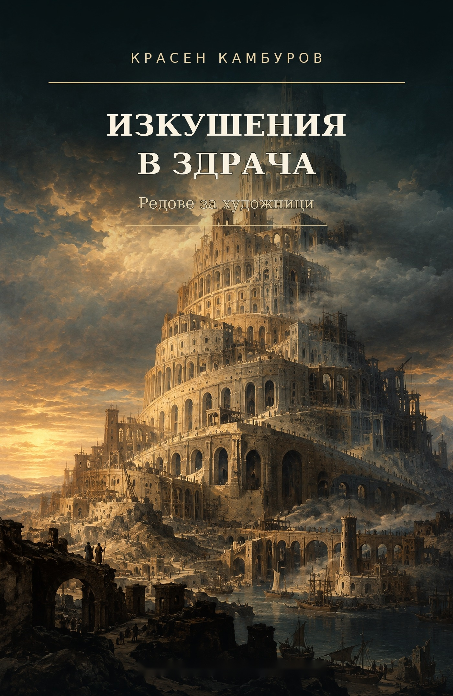

Есеистика и художествена критика · 2018 · Красен Камбуров
Изкушения в здрача
Редове за художници
Размисли за живописта и срещите между образа, историята и човека. Седемнадесет подлистника, осем есета и послеслов от Георги Цанков.
Второ издание · първо електронно издание · София, 2026

За книгата
Редове за художници
Книгата събира текстове за произведения на Давид, Фридрих, Пикасо, Ботичели, Тинторето, Кандински, Брьогел, Бош, Веласкес, Рембранд, Гоя и други художници. Новото издание включва цветни репродукции, списък на произведенията и връзки към музейните колекции и източниците на изображения.
Картините „Герника“ на Пабло Пикасо и „Лебеди, отразени в слонове“ на Салвадор Дали се разглеждат чрез връзки към официалните каталози, без възпроизвеждане в книгата.
Първо печатно издание: издателство „Изток-Запад“, София, 2018 г.
Свободно четене · PDF / EPUB
Изтеглете книгата
Илюстрираното второ издание е достъпно безплатно за лично, образователно и друго некомерсиално четене. Всички права върху литературния текст са запазени.
ISBN номерата за PDF и EPUB са заявени за определяне и ще бъдат добавени след получаването им.
Още от Красен Камбуров
Всички книги ↗